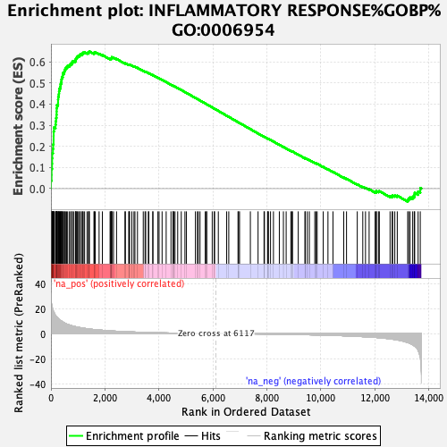
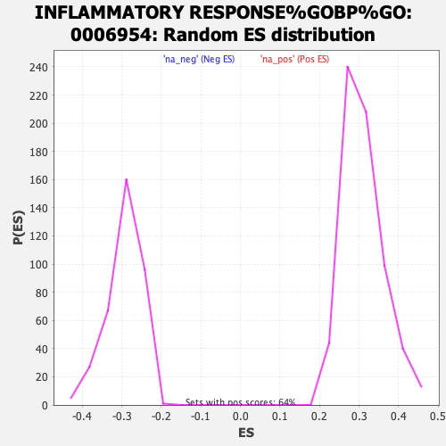

| | | Dataset | azacitvsdecit_RNASeq_ranks |
| Phenotype | NoPhenotypeAvailable |
| Upregulated in class | na_pos |
| GeneSet | INFLAMMATORY RESPONSE%GOBP%GO:0006954 |
| Enrichment Score (ES) | 0.6491831 |
| Normalized Enrichment Score (NES) | 2.0971098 |
| Nominal p-value | 0.0 |
| FDR q-value | 2.1646812E-4 |
| FWER p-Value | 0.001 |
Table: GSEA Results Summary

Fig 1: Enrichment plot: INFLAMMATORY RESPONSE%GOBP%GO:0006954
Profile of the Running ES Score & Positions of GeneSet Members on the Rank Ordered List
| SYMBOL | RANK IN GENE LIST | RANK METRIC SCORE | RUNNING ES | CORE ENRICHMENT | | 1 | CCR1 | 1 | 32.556 | 0.0383 | Yes |
| 2 | MEFV | 23 | 23.972 | 0.0650 | Yes |
| 3 | C5AR2 | 24 | 23.809 | 0.0930 | Yes |
| 4 | CXCR2 | 40 | 21.778 | 0.1175 | Yes |
| 5 | CYBB | 43 | 21.582 | 0.1428 | Yes |
| 6 | NINJ1 | 48 | 21.148 | 0.1674 | Yes |
| 7 | CHI3L1 | 73 | 18.885 | 0.1879 | Yes |
| 8 | MMP25 | 82 | 18.270 | 0.2088 | Yes |
| 9 | RAC1 | 97 | 17.704 | 0.2286 | Yes |
| 10 | CCL2 | 98 | 17.574 | 0.2493 | Yes |
| 11 | LAT | 100 | 17.518 | 0.2699 | Yes |
| 12 | ADAM8 | 111 | 16.902 | 0.2891 | Yes |
| 13 | HRH1 | 168 | 14.740 | 0.3023 | Yes |
| 14 | CCR2 | 179 | 14.337 | 0.3184 | Yes |
| 15 | TGFB1 | 191 | 13.882 | 0.3340 | Yes |
| 16 | FCGR2C | 205 | 13.537 | 0.3490 | Yes |
| 17 | TMIGD3 | 210 | 13.398 | 0.3644 | Yes |
| 18 | NLRC4 | 212 | 13.389 | 0.3801 | Yes |
| 19 | ORM1 | 221 | 13.171 | 0.3951 | Yes |
| 20 | S100A8 | 262 | 12.402 | 0.4067 | Yes |
| 21 | F3 | 263 | 12.376 | 0.4213 | Yes |
| 22 | VNN1 | 268 | 12.310 | 0.4355 | Yes |
| 23 | LRP1 | 292 | 11.865 | 0.4478 | Yes |
| 24 | S100A9 | 300 | 11.735 | 0.4611 | Yes |
| 25 | ANXA1 | 316 | 11.374 | 0.4734 | Yes |
| 26 | TBXA2R | 347 | 10.615 | 0.4837 | Yes |
| 27 | TLR2 | 358 | 10.494 | 0.4953 | Yes |
| 28 | SLAMF8 | 382 | 10.215 | 0.5056 | Yes |
| 29 | SLC11A1 | 391 | 10.057 | 0.5169 | Yes |
| 30 | C5AR1 | 405 | 9.871 | 0.5275 | Yes |
| 31 | CD40 | 437 | 9.545 | 0.5365 | Yes |
| 32 | TREM2 | 445 | 9.361 | 0.5470 | Yes |
| 33 | MGLL | 492 | 8.753 | 0.5539 | Yes |
| 34 | IFNGR1 | 510 | 8.457 | 0.5626 | Yes |
| 35 | IL6R | 538 | 8.101 | 0.5702 | Yes |
| 36 | TYROBP | 581 | 7.669 | 0.5761 | Yes |
| 37 | CARD8 | 620 | 7.387 | 0.5820 | Yes |
| 38 | GRN | 688 | 6.911 | 0.5852 | Yes |
| 39 | CX3CR1 | 722 | 6.658 | 0.5906 | Yes |
| 40 | SCUBE1 | 777 | 6.260 | 0.5940 | Yes |
| 41 | TLR6 | 789 | 6.203 | 0.6005 | Yes |
| 42 | CHUK | 843 | 5.896 | 0.6035 | Yes |
| 43 | PSEN1 | 907 | 5.554 | 0.6054 | Yes |
| 44 | CCL25 | 910 | 5.538 | 0.6118 | Yes |
| 45 | CD68 | 934 | 5.415 | 0.6165 | Yes |
| 46 | IL10RB | 956 | 5.306 | 0.6212 | Yes |
| 47 | IL1RN | 983 | 5.200 | 0.6254 | Yes |
| 48 | FCGR2B | 1020 | 5.016 | 0.6286 | Yes |
| 49 | SNAP23 | 1064 | 4.835 | 0.6311 | Yes |
| 50 | ITGAM | 1087 | 4.756 | 0.6351 | Yes |
| 51 | PTGIR | 1152 | 4.490 | 0.6357 | Yes |
| 52 | CYBA | 1166 | 4.439 | 0.6400 | Yes |
| 53 | TUSC2 | 1195 | 4.375 | 0.6430 | Yes |
| 54 | FOS | 1247 | 4.201 | 0.6442 | Yes |
| 55 | CXCR4 | 1338 | 3.869 | 0.6421 | Yes |
| 56 | CLU | 1391 | 3.746 | 0.6427 | Yes |
| 57 | LYZ | 1409 | 3.697 | 0.6458 | Yes |
| 58 | TRIM14 | 1423 | 3.673 | 0.6492 | Yes |
| 59 | PXK | 1594 | 3.237 | 0.6405 | No |
| 60 | FCGR1A | 1604 | 3.215 | 0.6436 | No |
| 61 | TXNIP | 1639 | 3.134 | 0.6448 | No |
| 62 | IKBKG | 1783 | 2.885 | 0.6376 | No |
| 63 | NFAM1 | 1904 | 2.662 | 0.6319 | No |
| 64 | STAT3 | 2190 | 2.194 | 0.6134 | No |
| 65 | C3AR1 | 2209 | 2.162 | 0.6147 | No |
| 66 | ITGAL | 2241 | 2.114 | 0.6149 | No |
| 67 | NLRP1 | 2243 | 2.113 | 0.6173 | No |
| 68 | THBS1 | 2250 | 2.099 | 0.6193 | No |
| 69 | NFKB2 | 2253 | 2.093 | 0.6216 | No |
| 70 | ITGB2 | 2317 | 2.024 | 0.6194 | No |
| 71 | TNFRSF1A | 2430 | 1.884 | 0.6133 | No |
| 72 | HLA-DRB1 | 2741 | 1.569 | 0.5923 | No |
| 73 | NOD1 | 2758 | 1.553 | 0.5929 | No |
| 74 | HMOX1 | 2882 | 1.434 | 0.5856 | No |
| 75 | TLR4 | 2896 | 1.419 | 0.5863 | No |
| 76 | HDAC4 | 2913 | 1.406 | 0.5868 | No |
| 77 | APP | 2997 | 1.330 | 0.5822 | No |
| 78 | GPR68 | 3074 | 1.254 | 0.5781 | No |
| 79 | NFATC3 | 3111 | 1.218 | 0.5768 | No |
| 80 | PIK3CG | 3205 | 1.148 | 0.5713 | No |
| 81 | ITCH | 3419 | 0.990 | 0.5568 | No |
| 82 | IKBKB | 3485 | 0.954 | 0.5531 | No |
| 83 | RELB | 3510 | 0.941 | 0.5525 | No |
| 84 | CEBPB | 3608 | 0.879 | 0.5463 | No |
| 85 | FUT7 | 3624 | 0.868 | 0.5462 | No |
| 86 | CSF1R | 3774 | 0.774 | 0.5362 | No |
| 87 | PRDX5 | 3775 | 0.772 | 0.5371 | No |
| 88 | LOXL3 | 3962 | 0.667 | 0.5241 | No |
| 89 | PTGER1 | 4005 | 0.646 | 0.5218 | No |
| 90 | MAPKAPK2 | 4117 | 0.590 | 0.5143 | No |
| 91 | FOLR2 | 4268 | 0.524 | 0.5039 | No |
| 92 | FFAR2 | 4447 | 0.441 | 0.4912 | No |
| 93 | HMGB2 | 4522 | 0.409 | 0.4863 | No |
| 94 | NLRP3 | 4527 | 0.407 | 0.4865 | No |
| 95 | FCGR2A | 4545 | 0.401 | 0.4857 | No |
| 96 | PYCARD | 4595 | 0.384 | 0.4825 | No |
| 97 | ITIH4 | 4695 | 0.346 | 0.4756 | No |
| 98 | TBK1 | 4827 | 0.304 | 0.4663 | No |
| 99 | AOC3 | 4963 | 0.263 | 0.4567 | No |
| 100 | HYAL3 | 5019 | 0.247 | 0.4529 | No |
| 101 | TLR1 | 5351 | 0.156 | 0.4287 | No |
| 102 | ADGRE5 | 5425 | 0.138 | 0.4234 | No |
| 103 | MAP3K7 | 5457 | 0.129 | 0.4213 | No |
| 104 | PIK3CD | 5522 | 0.117 | 0.4167 | No |
| 105 | IL17D | 5715 | 0.075 | 0.4026 | No |
| 106 | BLNK | 5759 | 0.065 | 0.3995 | No |
| 107 | RIPK2 | 5769 | 0.062 | 0.3989 | No |
| 108 | HNRNPA0 | 5974 | 0.020 | 0.3839 | No |
| 109 | TLR5 | 6051 | 0.007 | 0.3783 | No |
| 110 | LIAS | 6060 | 0.006 | 0.3777 | No |
| 111 | LGALS9 | 6200 | -0.010 | 0.3675 | No |
| 112 | NLRP6 | 6509 | -0.059 | 0.3448 | No |
| 113 | JAK2 | 6587 | -0.073 | 0.3393 | No |
| 114 | PNMA1 | 6929 | -0.140 | 0.3143 | No |
| 115 | MYLK3 | 6949 | -0.145 | 0.3130 | No |
| 116 | MAP3K20 | 6986 | -0.151 | 0.3106 | No |
| 117 | TAB2 | 7387 | -0.239 | 0.2813 | No |
| 118 | F11R | 7672 | -0.307 | 0.2607 | No |
| 119 | F12 | 7893 | -0.369 | 0.2449 | No |
| 120 | TLR10 | 7909 | -0.375 | 0.2443 | No |
| 121 | HDAC5 | 8024 | -0.408 | 0.2363 | No |
| 122 | PARP4 | 8038 | -0.412 | 0.2359 | No |
| 123 | AIF1 | 8055 | -0.415 | 0.2352 | No |
| 124 | CCL1 | 8134 | -0.438 | 0.2299 | No |
| 125 | MFHAS1 | 8242 | -0.472 | 0.2226 | No |
| 126 | ANO6 | 8460 | -0.545 | 0.2072 | No |
| 127 | IL1B | 8611 | -0.597 | 0.1969 | No |
| 128 | NFX1 | 8713 | -0.627 | 0.1902 | No |
| 129 | PLSCR1 | 8886 | -0.687 | 0.1783 | No |
| 130 | MAPK9 | 8921 | -0.699 | 0.1766 | No |
| 131 | NRROS | 8949 | -0.709 | 0.1754 | No |
| 132 | SYK | 9161 | -0.793 | 0.1608 | No |
| 133 | KDM4D | 9407 | -0.896 | 0.1438 | No |
| 134 | GGT5 | 9422 | -0.900 | 0.1438 | No |
| 135 | MDK | 9495 | -0.934 | 0.1396 | No |
| 136 | PJA2 | 9572 | -0.971 | 0.1351 | No |
| 137 | CCR7 | 9773 | -1.061 | 0.1216 | No |
| 138 | ITGB1 | 9818 | -1.082 | 0.1197 | No |
| 139 | HMGB1 | 9862 | -1.105 | 0.1178 | No |
| 140 | TNFRSF4 | 10086 | -1.231 | 0.1028 | No |
| 141 | CD6 | 10261 | -1.332 | 0.0915 | No |
| 142 | KLRG1 | 10447 | -1.454 | 0.0796 | No |
| 143 | HSPG2 | 10845 | -1.746 | 0.0524 | No |
| 144 | PLA2G4B | 10949 | -1.839 | 0.0469 | No |
| 145 | CCRL2 | 11347 | -2.220 | 0.0202 | No |
| 146 | APOL2 | 11551 | -2.442 | 0.0081 | No |
| 147 | PTGER2 | 11652 | -2.545 | 0.0038 | No |
| 148 | RELA | 11786 | -2.735 | -0.0028 | No |
| 149 | IRAK2 | 12008 | -3.034 | -0.0156 | No |
| 150 | LY75 | 12052 | -3.108 | -0.0151 | No |
| 151 | SIGIRR | 12054 | -3.112 | -0.0115 | No |
| 152 | CD44 | 12132 | -3.282 | -0.0133 | No |
| 153 | REL | 12165 | -3.346 | -0.0117 | No |
| 154 | CD96 | 12562 | -4.203 | -0.0360 | No |
| 155 | AFAP1L2 | 12639 | -4.431 | -0.0364 | No |
| 156 | HDAC9 | 12657 | -4.475 | -0.0323 | No |
| 157 | PTGER4 | 12737 | -4.743 | -0.0326 | No |
| 158 | APOL3 | 12829 | -5.064 | -0.0333 | No |
| 159 | TRAF3IP2 | 13216 | -7.109 | -0.0534 | No |
| 160 | TNFSF4 | 13248 | -7.398 | -0.0470 | No |
| 161 | NFKB1 | 13302 | -7.965 | -0.0415 | No |
| 162 | HIF1A | 13400 | -8.942 | -0.0382 | No |
| 163 | GATA3 | 13458 | -9.814 | -0.0308 | No |
| 164 | CTNNBIP1 | 13474 | -10.110 | -0.0200 | No |
| 165 | ADM | 13601 | -13.422 | -0.0135 | No |
| 166 | F2R | 13681 | -18.858 | 0.0029 | No |
Table: GSEA details [plain text format]

Fig 2: INFLAMMATORY RESPONSE%GOBP%GO:0006954: Random ES distribution
Gene set null distribution of ES for INFLAMMATORY RESPONSE%GOBP%GO:0006954